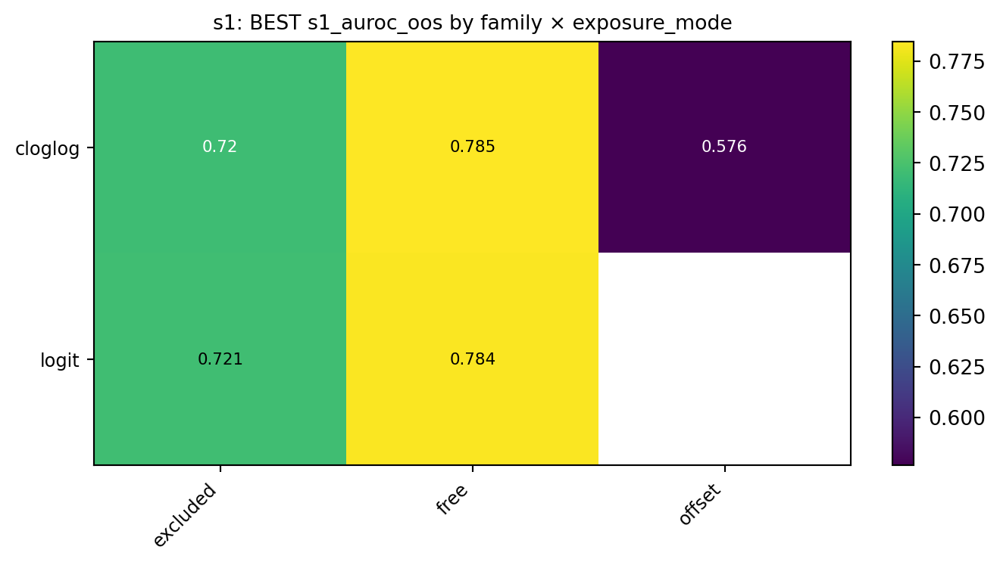
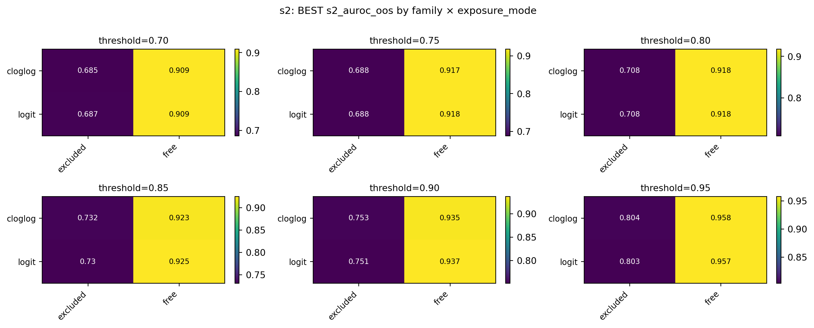
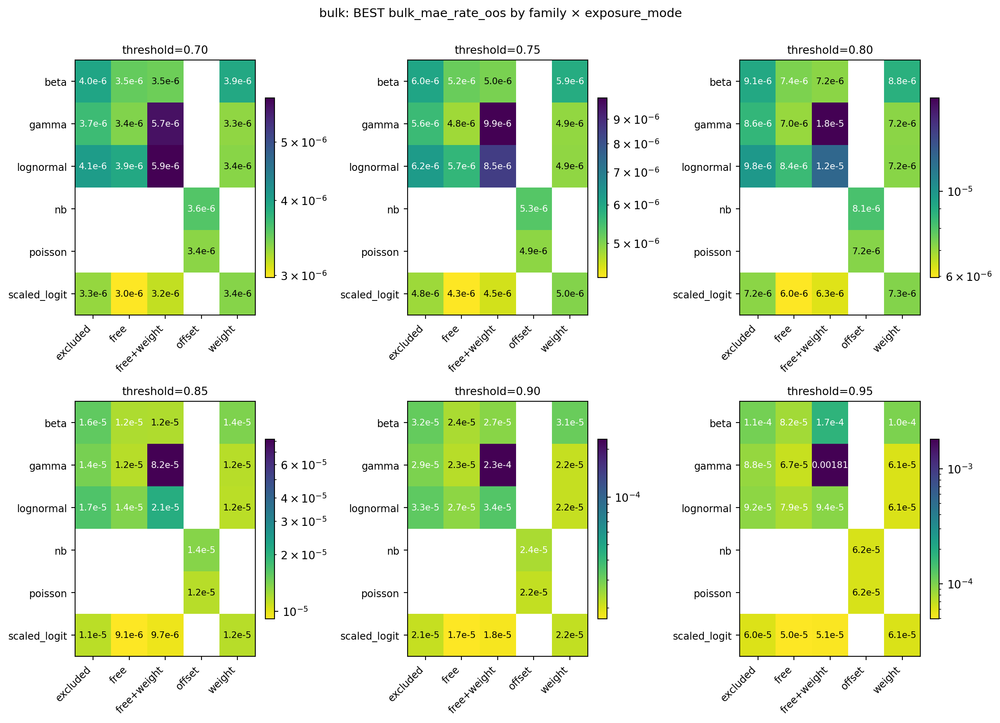
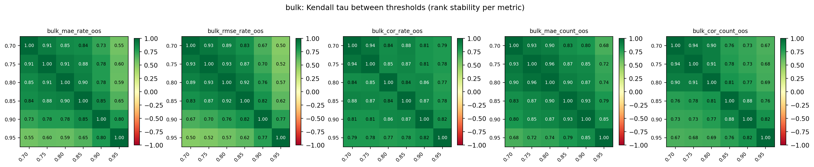
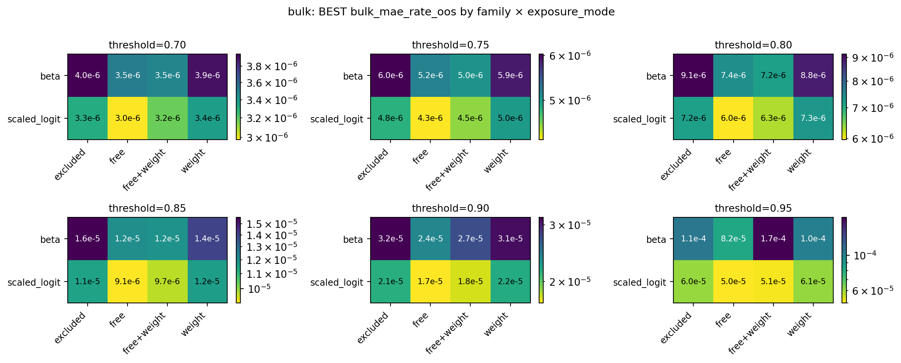
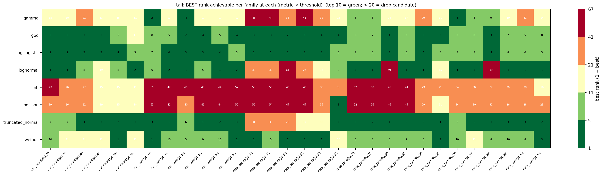

s1_auroc_oos (out of 16 covariate combinations) per (family × exposure_mode) cell. Higher = better. The logit / offset cell is empty by design — offset is only valid with cloglog.Family / exposure_mode decisions from the 2026-05-07 evaluate run
This report records the screening decisions made on the 2026-05-07 preliminary double-hurdle (DH) evaluate run. The job at this stage is not to pick a single winning model — it is to discard families and exposure modes that clearly cannot win, so that the downstream selection step works against a narrower, more defensible grid.
There are five potential decision axes per stage: family, exposure_mode, covariate set, threshold_quantile, and (implicitly) the data / fold structure. We work through them stage by stage:
P(deaths >= 1) — threshold-independent.P(rate >= threshold | deaths >= 1) — threshold-dependent.E[rate | deaths >= 1, rate < threshold] — threshold-dependent.E[rate | deaths >= 1, rate >= threshold] — threshold-dependent.Each section shows the one or two plots that drove the call, the observations they support, and the locked-in decision.
P(deaths >= 1)S1 is fit on the full dataset. Its outcome (any_death) does not depend on threshold_quantile, so the same (s1_family, s1_exposure_mode, s1_cov) spec produces identical metrics across every DH configuration that uses it. Two structural choices to make:
logit or cloglog.log_exposed enters the linear predictor.
excluded — drop log_exposed.free — include with a freely estimated coefficient.offset — include with coefficient locked at 1 (cloglog only; corresponds to the proportional-hazards / Poisson-process derivation of cloglog).We deduplicate to one row per S1 spec and look at the best AUROC achievable in each (family, exposure_mode) cell.

s1_auroc_oos (out of 16 covariate combinations) per (family × exposure_mode) cell. Higher = better. The logit / offset cell is empty by design — offset is only valid with cloglog.What we saw:
cloglog × free and logit × free are tied at 0.785 AUROC (Brier values agree to within ~0.001 as well). Identical ordering of fitted probabilities → identical AUROC, and the MLE pins the fitted-probability surface to nearly the same values for the two links when the data sits in moderate-p range. So the family choice carries no information here.cloglog × offset collapses to 0.58 AUROC. The offset locks the log_exposed slope at 1, which is the wrong empirical slope (we expect more-exposed populations to have a sub-1 slope on per-person rate), so the model is forced into a misspecification it cannot escape.excluded (no exposure information at all) sits at 0.72 — better than offset but well below free, confirming that exposure information carries real signal when used correctly.s1_family = logit, s1_exposure_mode = free.
Drop cloglog (identical metrics, less canonical link, harder small-sample behavior — we’d only keep it for the proportional-hazards interpretation, which doesn’t survive once we move off offset). Drop excluded and offset.
Uncertainty propagation works identically for both links — both fit via sm.GLM, both expose cov_params() for joint-coefficient sampling — so that is not a discriminator.
P(rate >= threshold | deaths >= 1)S2’s outcome IS threshold-dependent: the binary label rate >= threshold shifts as threshold_quantile moves. We deduplicate per (s2_family, s2_exposure_mode, s2_cov, threshold_quantile) and look at each threshold separately. Same family/exposure_mode question as S1.

s2_auroc_oos per (family × exposure_mode) cell, faceted by threshold. The free / excluded contrast is the dominant signal at every threshold.What we saw:
logit and cloglog agree to within ~0.001 AUROC in every comparable cell across all thresholds — same identifiability story as S1.free dominates excluded everywhere, with a widening gap at higher thresholds (0.92 vs 0.71 at threshold = 0.80; 0.96 vs 0.80 at 0.95).s2_family = logit, s2_exposure_mode = free at every threshold.
Drop cloglog and excluded. Same reasoning as S1, applied across all thresholds.
E[rate | deaths >= 1, rate < threshold]Bulk has six candidate families: beta, gamma, lognormal, scaled_logit, nb, poisson. Three of them (beta, scaled_logit, truncated_normal — though truncated_normal is bulk-eligible only in limited form) enforce the bound predicted_rate < threshold by construction. The other rate families (gamma, lognormal) and the count families (nb, poisson) can predict rates above threshold, extrapolating outside the bulk training support.
Bulk is doubly threshold-dependent: the training set changes with threshold, and absolute-error metrics (mae_rate, rmse_rate, mae_count) shift in scale across thresholds. So we read MAE/RMSE within a threshold, not across, and use rank-based comparisons for cross-threshold consistency.

bulk_mae_rate_oos per (family × exposure_mode) cell, faceted by threshold. Lower is better. Same-threshold rows are directly comparable; absolute values are not comparable across thresholds. beta and scaled_logit are tied for best in nearly every threshold.Cross-threshold rank stability. A natural worry: maybe the right bulk family at threshold = 0.80 is different from threshold = 0.95. We check by computing the Kendall τ between the rankings at each pair of thresholds — high τ means the same configurations win regardless of threshold.

What we saw:
beta and scaled_logit consistently anchor the lowest-MAE cells at every threshold, with rankings nearly flat across the threshold sweep.gamma and lognormal are competitive at low thresholds but drift toward higher MAE as threshold rises, consistent with their lack of upper-bound enforcement.nb and poisson (the count-bulk families) live in the offset-only column and are worse than the rate families at every threshold.bulk_family ∈ {beta, scaled_logit}.
Drop gamma, lognormal, nb, poisson. The two surviving families are precisely the ones that enforce predicted_rate ∈ (0, threshold) by construction — beta normalizes y by threshold, scaled_logit’s link maps R → (0, threshold). The empirical dominance lines up with the structural argument: bulk’s job is the conditional expectation given the rate is below threshold, and the bounded families do not extrapolate out of support.
Restricting to beta and scaled_logit, we re-examine the exposure_mode × covariate plane. Rate-bulk families have four exposure modes available: excluded, free, free+weight, weight.

beta and scaled_logit. With only two families × four exposure modes, individual cell values become legible. free and free+weight dominate at every threshold for both families.What we saw:
free and free+weight cells are uniformly the lowest-MAE cells at every threshold for both families.excluded (no exposure term) and weight (population weights only, no slope on log_exposed) are visibly worse at every threshold.free lets the data choose the slope; free+weight adds population weighting on top.bulk_exposure_mode ∈ {free, free+weight} for both beta and scaled_logit.
Drop excluded and weight. Both surviving modes are kept open because the choice between them is downstream — they produce similar rankings, and the call between weighted and unweighted IRLS is a calibration question, not a screening one.
E[rate | deaths >= 1, rate >= threshold]Tail has more candidate families (eight: gamma, gpd, log_logistic, lognormal, nb, poisson, truncated_normal, weibull) and a noisier ranking story than bulk. The cross-threshold Kendall τ heatmap drops into the 0.4–0.5 range for adjacent thresholds in count metrics — there is more shuffling here than in bulk. The cleanest framing for the screening question is therefore not “what’s best on average” but “which families have any covariate / exposure_mode combination that reaches the top 10 anywhere?”

What we saw:
nb and poisson are uniformly red. Their best-rank-achievable is > 20 in nearly every (metric × threshold) cell — and structurally they are the wrong tool: count GLMs have no threshold awareness, so their predicted rates can land below threshold (a contradiction with the conditional eval set rate >= threshold).gpd, log_logistic, lognormal, truncated_normal reach top-10 in nearly every cell. They are the families that fit on excess_rate = rate - threshold (or, for truncated_normal, on log-rate with a lower truncation at log(threshold)) — both formulations enforce predicted_rate >= threshold by construction.gamma is mixed: rank 2–4 on rate metrics at low thresholds but rank 32–45 in MAE-count cells. Ceiling is high but the failure mode is broad enough to flag.weibull never breaks top 10 in some cells but never goes truly bad (worst best-rank is 16). On the bubble.Drop nb and poisson. Tentatively keep gpd, log_logistic, lognormal, truncated_normal, weibull, gamma — but flag gamma and weibull as suspicious pending closer look in the next iteration.
Same structural argument as bulk: the families that enforce the conditional support (predicted_rate >= threshold) by construction are precisely the ones that cluster at the top of the rankings.
The threshold decision is left for the next iteration of this report. The cross-threshold Kendall τ matrices computed for bulk show that family / exposure_mode rankings are stable enough across thresholds that the decisions above transfer; but the question of which threshold to pick — i.e., whether 0.80 or 0.85 or 0.90 produces the best assembled DH model — is a separate selection step that depends on properties of the assembled prediction (calibration, coverage, total death prediction) rather than per-stage metrics.
| Stage | Family kept | Exposure mode kept | Notes |
|---|---|---|---|
| S1 | logit |
free |
logit & cloglog identical; offset misspecified |
| S2 | logit |
free |
log_exposed alone explains most discrimination |
| Bulk | beta, scaled_logit |
free, free+weight |
bounded families dominate by construction |
| Tail | gpd, log_logistic, lognormal, truncated_normal (+ gamma, weibull flagged) |
TBD | drop nb and poisson; revisit gamma/weibull |
| Threshold | TBD | — | requires assembled-DH metrics, not per-stage |
Each entry above is logged as a discrete decision in .claude/DECISIONS.md with revisit conditions.